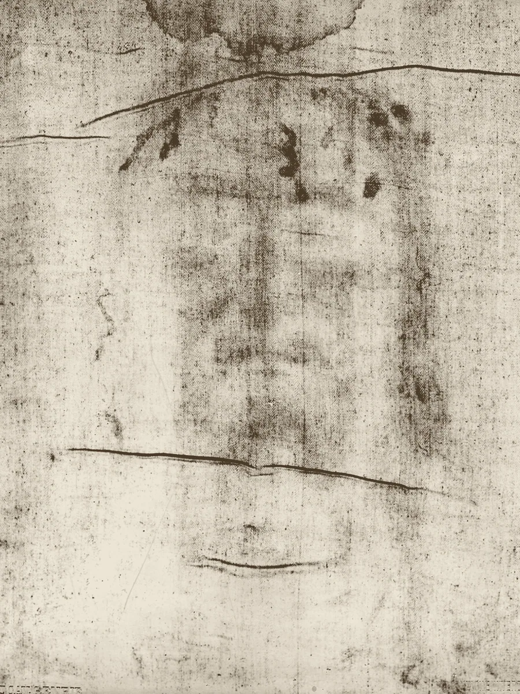
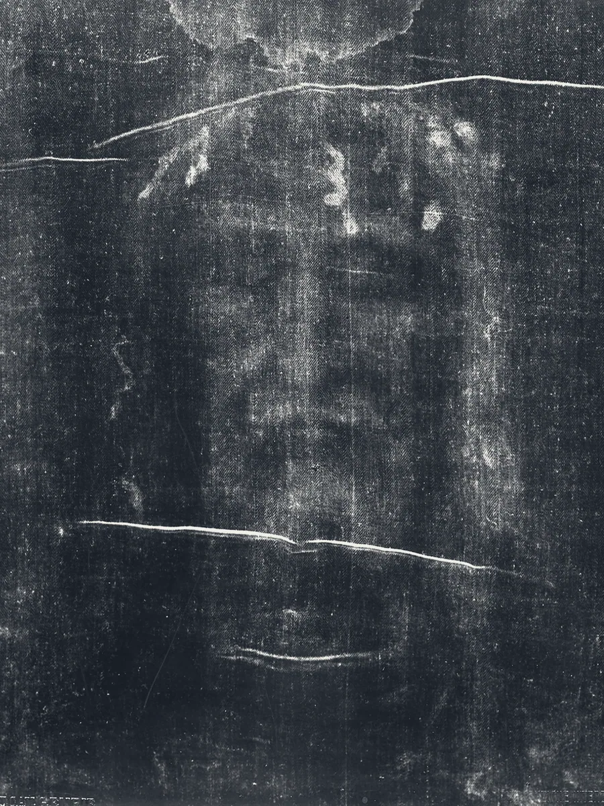
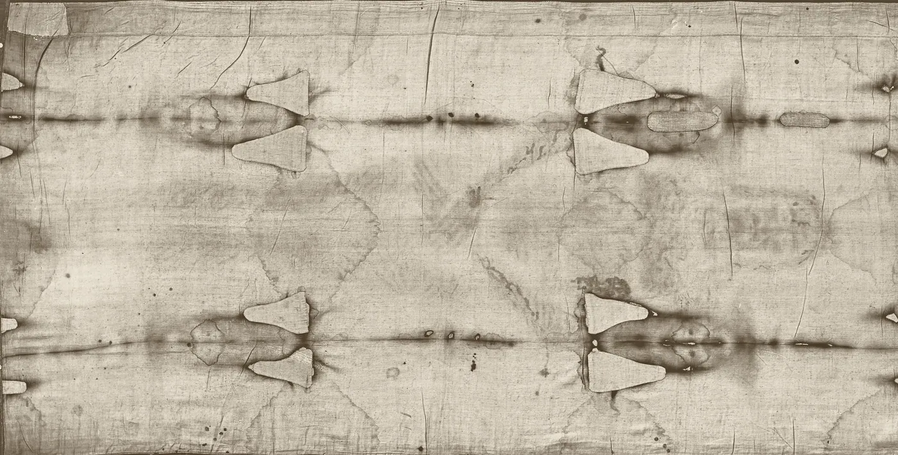
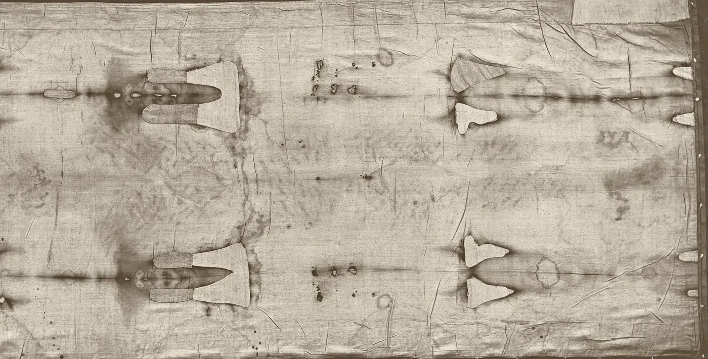

Examina tú mismo la Sábana Santa de Turín
Una tela de lino de 4,4 metros de largo lleva la imagen tenue de un hombre que fue flagelado y crucificado. Algunos la llaman una falsificación medieval. Otros, la mortaja de Jesús. Aquí está la evidencia de ambos lados, con todas las fuentes, para que la juzgues tú mismo.


Mira cómo se revela la placaJuan 20:24-31
24 Empero Tomás, uno de los doce, que se dice el Dídimo, no estaba con ellos cuando Jesús vino.
25 Dijéronle pues los otros discípulos: Al Señor hemos visto. Y él les dijo: Si no viere en sus manos la señal de los clavos, y metiere mi dedo en el lugar de los clavos, y metiere mi mano en su costado, no creeré.
26 Y ocho días después, estaban otra vez sus discípulos dentro, y con ellos Tomás. Vino Jesús, las puertas cerradas, y púsose en medio, y dijo: Paz a vosotros.
27 Luego dice a Tomás: Mete tu dedo aquí, y ve mis manos: y alarga acá tu mano, y métela en mi costado: y no seas incrédulo, sino fiel.
28 Entonces Tomás respondió, y díjole: ¡Señor mío, y Dios mío!
29 Dícele Jesús: Porque me has visto, Tomás, creíste: bienaventurados los que no vieron y creyeron.
30 Y también hizo Jesús muchas otras señales en presencia de sus discípulos, que no están escritas en este libro.
31 Estas empero son escritas, para que creáis que Jesús es el Cristo, el Hijo de Dios; y para que creyendo, tengáis vida en su nombre.
Juan 20:24-31, Reina-Valera 1909 (dominio público, ortografía actualizada)
Tomás pidió ver las marcas
Este sitio lleva el nombre del escéptico más honesto de los Evangelios. Tomás no creyó lo que le contaron sus amigos. Quería evidencia que pudiera ver y tocar: las marcas de los clavos, la herida del costado.
La Sábana Santa de Turín muestra a un hombre con marcas del mismo tipo. Si es lo que muchos creen que es, esa pregunta este sitio te la deja a ti. Te mostraremos las marcas, las pruebas, las dudas y las respuestas, y te indicaremos cada fuente.
Qué es
Una sola pieza de lino con una imagen frontal y otra dorsal de un hombre desnudo, cabeza con cabeza, además de manchas de sangre, marcas de quemaduras y manchas de agua de su larga historia. Se guarda en Turín, Italia, desde 1578, salvo durante la Segunda Guerra Mundial.

Imagen frontal
Imagen dorsalTurín, 28 de mayo de 1898
La noche en que una fotografía cambió la pregunta
A Secondo Pia, abogado y fotógrafo aficionado, le permitieron tomar las primeras fotografías de la tela. Al revelar su placa de vidrio, esperaba ver una imagen invertida y fantasmal. En cambio, el negativo mostró un retrato claro y natural de un hombre.
La imagen de la tela se comporta como un negativo fotográfico: la luz y la sombra están invertidas. Nadie lo había notado antes, porque nadie había visto la imagen invertida hasta que se fotografió. Por esto comenzó el estudio moderno de la Sábana Santa.
La respuesta escéptica: una imagen hecha presionando una tela sobre un relieve, o frotando polvo sobre ella, también sale con los tonos invertidos. Así que una imagen en negativo no exige, por sí sola, una fotografía ni un milagro. La verdadera pregunta es si esos métodos coinciden con todo lo demás de la imagen.
Contiene información en 3D
En 1976, el físico John Jackson y el ingeniero Eric Jumper pasaron una fotografía de la Sábana Santa por un VP-8 Image Analyzer, un aparato hecho para convertir el brillo en altura. Las fotografías comunes salen deformadas. La Sábana Santa salió como un cuerpo coherente en relieve.
La razón: lo oscura que es la imagen en cada punto parece corresponder a la distancia entre la tela y el cuerpo en ese punto. La medición en la que se basa esto, publicada en 1984, era modesta: 13 puntos, con una correlación de r cuadrado 0,60 y un amplio margen de error. Pero el efecto se ve con facilidad. Esta vista en 3D se construye de la misma manera, en vivo en tu navegador, directamente a partir de la imagen. Arrástrala para girarla.
La respuesta escéptica: las imágenes hechas a partir de un relieve poco profundo, como un frotado sobre un bajorrelieve, también contienen algo de información de profundidad. En 2025, un diseñador 3D, Cicero Moraes, argumentó con simulaciones por computadora que la imagen encaja mejor con un relieve bajo que con un cuerpo completo. El debate es qué tan bien coincide cada método con la tela real.
Las marcas de una crucifixión
Los patólogos forenses que estudiaron la imagen describen más de cien pequeñas heridas de un flagelo romano, heridas punzantes alrededor de la cabeza, un rostro hinchado, raspones en los hombros, una herida de clavo en la muñeca y no en la palma, y una herida en el costado, entre las costillas, que sangró después de la muerte.
Estas marcas encajan con los relatos de los Evangelios, que mencionan la flagelación, las espinas, los golpes, los clavos y una lanza en el costado. Varios detalles, como el clavo en la muñeca, van en contra de cómo los artistas medievales solían pintar la crucifixión.

La prueba que dijo medieval
En 1988, tres laboratorios en Arizona, Oxford y Zúrich dataron con carbono 14 pequeñas muestras de una esquina de la tela. Su resultado combinado, publicado en la revista Nature en 1989, fue de 1260 a 1390 d. C., con un 95% de confianza. Es el argumento individual más fuerte contra la autenticidad, y por eso le dedicamos una página completa.
Desde entonces, varios investigadores han cuestionado de dónde se tomó la muestra, si las muestras eran coherentes entre sí y si los datos originales justificaban la precisión publicada. Otros métodos de datación han dado fechas más antiguas, aunque ninguno está tan establecido como la datación por radiocarbono.
¿Cómo llegó ahí la imagen?
Después de más de un siglo de estudio, nadie tiene una respuesta completa. No es un eslogan: así está la ciencia hoy. Aquí tienes una de las hipótesis más audaces, en forma de animación.
La imagen es de un color amarillo pajizo y está en las fibras más superficiales del lino. No hay pintura, ni pinceladas, ni señales de que la imagen haya penetrado en los hilos. No se comporta como una quemadura común: las quemaduras reales del incendio de 1532 brillan bajo la luz ultravioleta, y la imagen del cuerpo no.
Los investigadores han propuesto pintura, una estatua caliente, polvo frotado sobre un relieve, una forma primitiva de fotografía, una reacción química con gases de un cuerpo y un estallido de radiación. Cada idea explica algunos rasgos y tiene problemas con otros.
Lo que un láser puede y no puede hacer
Entre 2005 y 2010, científicos de ENEA, la agencia nacional italiana de nuevas tecnologías, dispararon pulsos muy breves de láser ultravioleta sobre lino. Dentro de un rango estrecho de ajustes, colorearon el lino de un amarillo pajizo parecido al de la Sábana Santa, sin quemarlo. En la mayoría de las fibras, el color llegó más hondo que en la Sábana Santa. En al menos una fibra, se quedó en la delgada pared externa, como en la Sábana Santa.
Como cálculo aproximado, multiplicaron la intensidad del láser que funcionó por el área de un cuerpo humano. El resultado, unos 34 billones de vatios, es mucho más que cualquier fuente ultravioleta construida hasta ahora. Es una cifra estimada a grandes rasgos para lograrlo con un solo pulso de láser. No es una medición de cómo se formó realmente la imagen. Los autores escribieron que "nadie puede afirmar" que la imagen se formó de esta manera, y que su origen sigue siendo desconocido.
Pésalo tú mismo
La mayoría de los debates sobre la Sábana Santa se reducen a unos pocos datos y a cuánto debe contar cada uno. Por eso hicimos una herramienta sencilla. Repasa los puntos clave, di si crees que cada uno es cierto y mira qué lado va ganando para ti.
Junto a cada punto encontrarás el argumento más fuerte en su contra, para que pongas a prueba tu propia respuesta.
Si no viere en sus manos la señal de los clavos ... no creeré.Tomás, en Juan 20:25
Por qué no es una prueba
Si Dios quisiera obligar a creer, podría hacerlo. Una señal que no dejara lugar a la duda tampoco dejaría lugar para elegir. La Sábana Santa hace algo más discreto: le da a una mente seria lo suficiente para tomarse la pregunta en serio, y te deja a ti el último paso.
El video de Truthly que verificamos termina con esta idea, y creemos que es el lugar correcto para terminar. Tomás pudo ver las marcas. La respuesta que recibió hablaba de todos los que vienen después de él.
Bienaventurados los que no vieron y creyeron.Jesús a Tomás, Juan 20:29
Preguntas frecuentes
¿Es real la Sábana Santa de Turín?
Es una tela de lino real y muy antigua. Si es la mortaja de Jesús está en disputa. La prueba del carbono 14 de 1988 la ubicó entre 1260 y 1390 d. C. Muchos investigadores cuestionan ese resultado, y ningún método ha reproducido todavía todas las propiedades de la imagen a la vez. Este sitio presenta ambos lados con sus fuentes.
¿Qué encontró la datación por radiocarbono?
En 1988, laboratorios de Arizona, Oxford y Zúrich dataron muestras de una esquina y reportaron de 1260 a 1390 d. C., con un 95% de confianza (Damon y otros, Nature, 1989). Los críticos sostienen que esa esquina pudo haber sido reparada, y un nuevo análisis de los datos originales en 2019 encontró que las muestras no eran tan coherentes como se informó.
¿La imagen está pintada?
El equipo científico de 1978 (STURP) concluyó que no es una pintura: no encontró pigmento que formara la imagen, ni pinceladas, ni aglutinante. El microscopista Walter McCrone no estuvo de acuerdo y reportó óxido de hierro y otros materiales. La mayoría de los estudios posteriores dieron la razón a STURP sobre la imagen, aunque aceptan que en la tela hay partículas diminutas de muchos materiales.
¿Por qué la imagen es un negativo?
En la tela, la luz y la sombra están invertidas respecto a una imagen normal, así que un negativo fotográfico de ella parece un retrato natural. Lo descubrió Secondo Pia en 1898. Los escépticos señalan que las imágenes hechas por contacto con un relieve también salen invertidas.
¿Qué dice la Iglesia católica?
La Iglesia nunca ha declarado oficialmente que la Sábana Santa sea auténtica, y no obliga a nadie a creerlo. Los papas recientes la han llamado un ícono del sufrimiento de Cristo y han orado ante ella. La Santa Sede es su dueña desde 1983, y el arzobispo de Turín es su custodio.
¿Puedo verla en persona?
Se guarda en la catedral de San Juan Bautista, en Turín, en una urna con clima controlado, y por lo general no está expuesta al público. Se muestra en exposiciones públicas poco frecuentes, como las de 2010 y 2015, y en una transmisión en vivo en 2020.
A dónde ir ahora
Si tienes dudas
Empieza por el expediente. Cada argumento, a favor y en contra, calificado según su fuerza.
Si quieres verla
Acércate a la tela completa, cambia al negativo y encuentra cada marca.
Si quieres profundizar
Cientos de artículos y estudios, con buscador y enlaces a los originales.
Si te preguntas qué sigue
Pasos honestos para seguir, ya sea que dudes, te preguntes o creas.